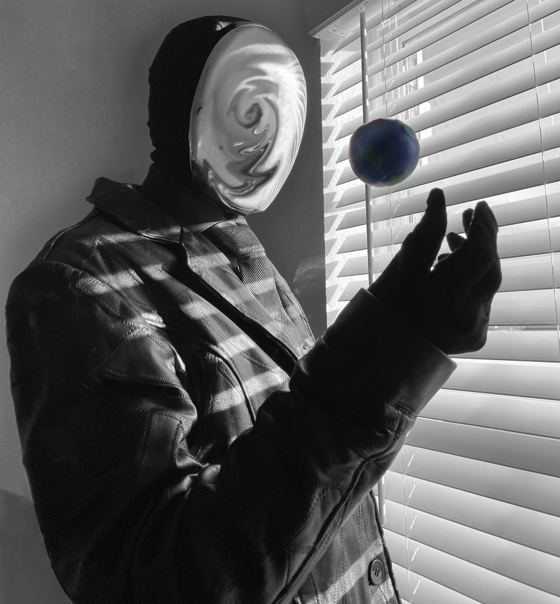

Chrometor, a skilled counterintelligence specialist, rose as Chrome Corp's mascot CEO after upper management vanished. Stakeholders elected the anonymous figure under one condition: total secrecy. Clad in a faceless silver mask and patchwork leather suit, Chrometor accepted, notifying employees via casual emails—prompting many resignations. Empowered, Chrometor fired adversaries, promoted allies, and delighted stakeholders. Lifestyle upgrades followed: luxury chrome decor, building-wide cooling, and full immersion in the role. Profits soared in the first year, elevating the firm's public image. Yet deception lurked. Prolonged hours blurred identity; Chrometor relocated to the building, wearing the mask constantly and avoiding mirrors. Acquiring majority stock, Chrometor ousted stakeholders, seizing absolute control. Amid AI-driven efficiency, Chrometor transformed the company into a gleaming powerhouse. Bored by order, bold antics ensued: stealing eternal ice, unleashing chaos with reptiles and felines. Internal turmoil peaked—a clash between human self and mascot facade. Through cunning intellect, Chrometor mimicked vices to mask kindness, enduring rage and self-deception. Duality resolved, allowing harmonious coexistence as both original soul and corporate icon—kin to humanity, unbound by torment.